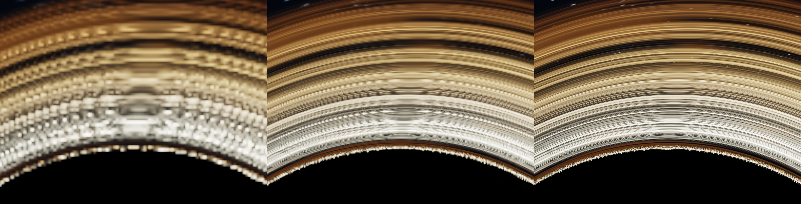
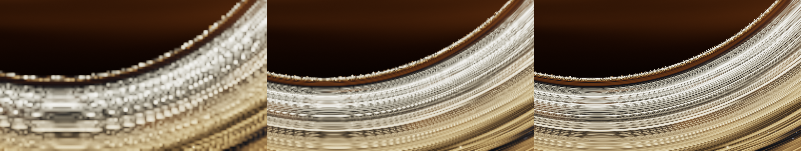
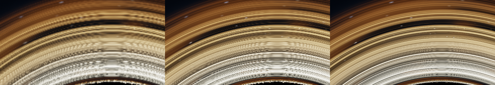
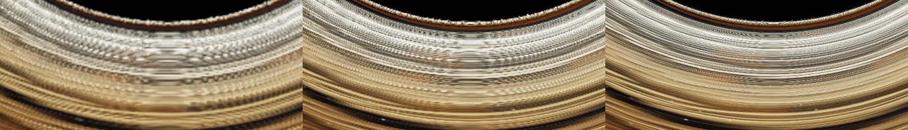
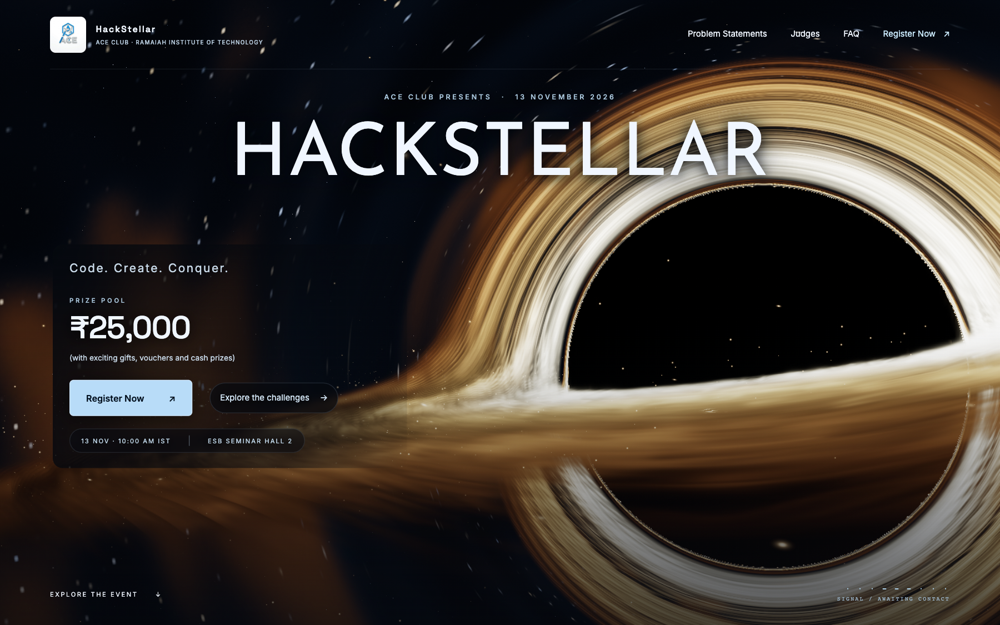
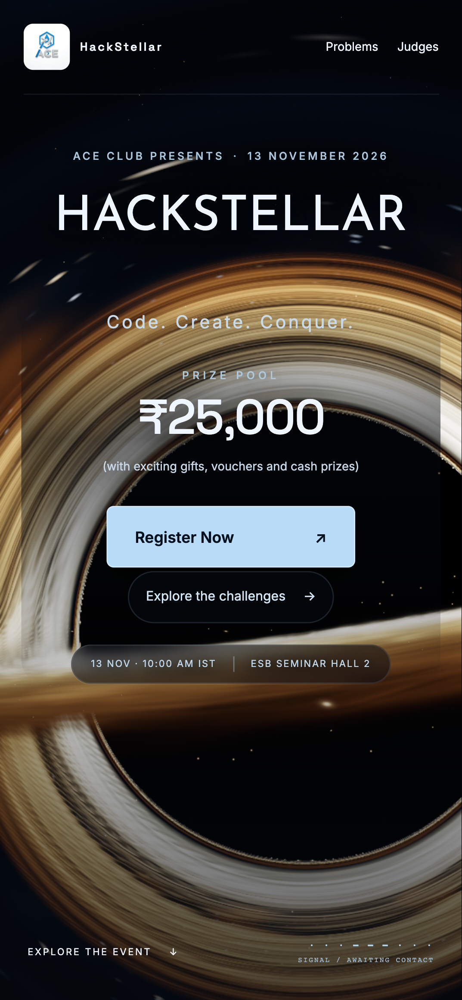

Uncommitted branch: fix/black-hole-sharpness. No push, merge or deployment.
The strips compare the same camera pose and scene time. Left: original. Middle: local fix. Right: supersampled original. No blur filter was retained. Mobile screenshots are emulated on the Mac GPU; physical-device haze remains unverified.
Full report · Quality data · Performance data
Before / local fix / 3× reference. Click to inspect native pixels.

Before / local fix / 3× reference. Click to inspect native pixels.

Before / local fix / 3× reference. Click to inspect native pixels.

Before / local fix / 3× reference. Click to inspect native pixels.


